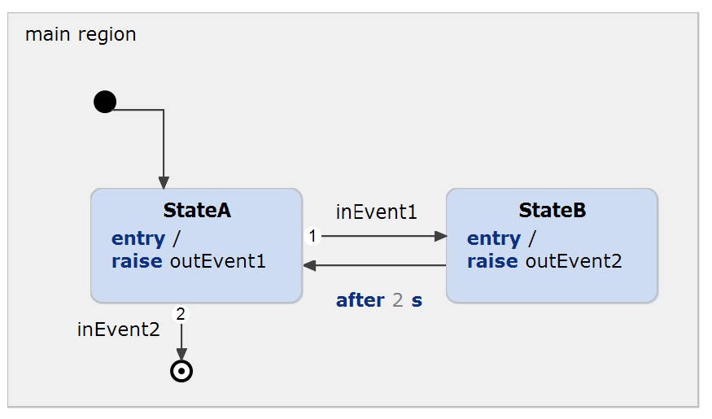

Embedded Systems Integration Guide - FreeRTOS Integration.
This example has been created to illustrate how itemis CREATE can be integrated in FreeRTOS. You can find a detailed description in our documentation.
The state machine contains the following parts:

In order to run the example, FreeRTOS must be cloned. Clone FreeRTOS from https://github.com/FreeRTOS/FreeRTOS
Open a terminal and cd to the root of this project, call cmake, make the project and run the binary. Ensure that the state machines code has been generated.
cd "path to your project"
cmake -B build -DCOMPILER=GCC_POSIX -DFREE_RTOS_PATH="path to your cloned FreeRTOS"
./create_freeRTOS